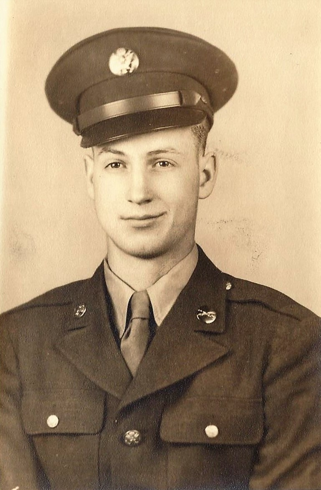
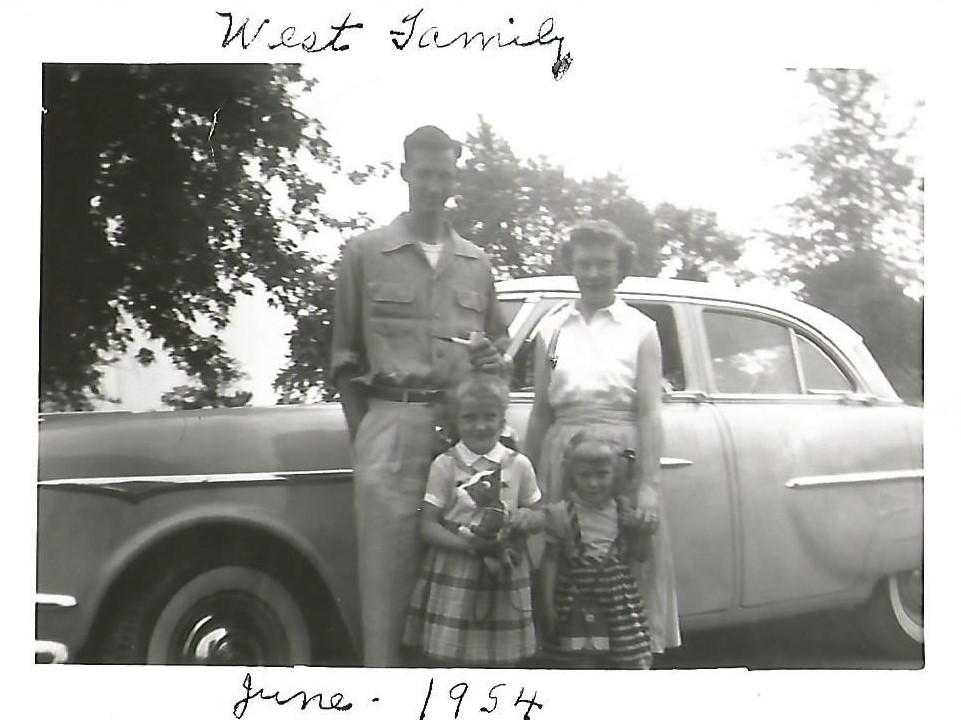
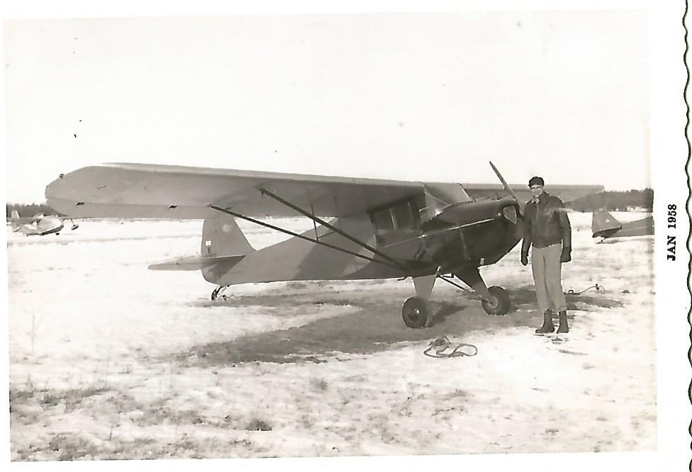

{kind=link}
{kind=link}
World War II
In the aftermath of the Great War the Central Powers were left broken and destabilized. On September 1st 1939 a new war had begun with the invasion of Poland by Germany. This would have a profound effect on the current generation and the generations to come.
William Rongholt
{kind=link}
William A Rongholt fought in World War II as an infantryman in the US Army. Not much is available on him except he was missing in action and was seen crossing the Rhine River in Germany, 3 days prior to Germany surrendering.
Arthur W. West
 {kind=link}
{kind=link}
Arthur West (Will Rongholt's Grand Father) served in WWII in the US Army Air Corp (today is called Air Force) as a flying sergeant and would help with cargo in C-47's. He had multiple billets including radio operator, mechanic and gunner. He was in many places but mostly in the South Pacific like New Guinea. Arthur entered the service in October 28, 1942 and separated with an honorable discharge on October 12, 1945. He was awarded the Distinguished Flying Cross which is given to people that were in an aerial fight and shown acts of heroism.